What EffectTrace cannot tell you
An evidence system is only useful if its limits are explicit. This is the short list; the full list is in docs/limitations.md.
- Temporal correlation is not causation.
A signal that changed inside the window is attached only as TEMPORAL_CORRELATION and graded CORRELATED. EffectTrace never upgrades it.
- Missing telemetry yields incomplete graphs.
Lost trace context, a missing audit log or an unavailable metrics source is reported as missing coverage. Missing data lowers coverage; it never raises confidence.
- Concurrent changes to the same workload can be ambiguous.
When two actions both changed an owner of an object inside overlapping windows, the change is attributed to neither and listed as an ambiguity.
- Audit configuration matters.
DIRECT confirmation for human actions depends on the kube-apiserver audit log being enabled and readable at Metadata level. Without it, those actions are not observed.
- Metric precision is bounded by scraping.
Prometheus scrape and evaluation intervals limit when a change can be seen and how small a change can be detected.
- Clock skew between sources.
Windows are widened by a skew tolerance. Large skew between the API server, nodes and telemetry can push observations out of, or into, a window.
- Not every relationship is followed.
v0.1 follows controller ownership for Deployments, ReplicaSets, StatefulSets, DaemonSets and Jobs. It does not follow Service selectors, EndpointSlices or ConfigMap consumers; such effects appear at most as exclusions.
- State is in memory.
Observations and graphs are kept in a bounded in-memory store. Recordings allow deterministic replay, but there is no durable backend.
- The lab is a laptop, not production.
Timings come from a single-node kind cluster on a laptop. They are not production-scale measurements.

Degraded inputs produce a smaller, honestly graded graph with a coverage report, never a confident guess.